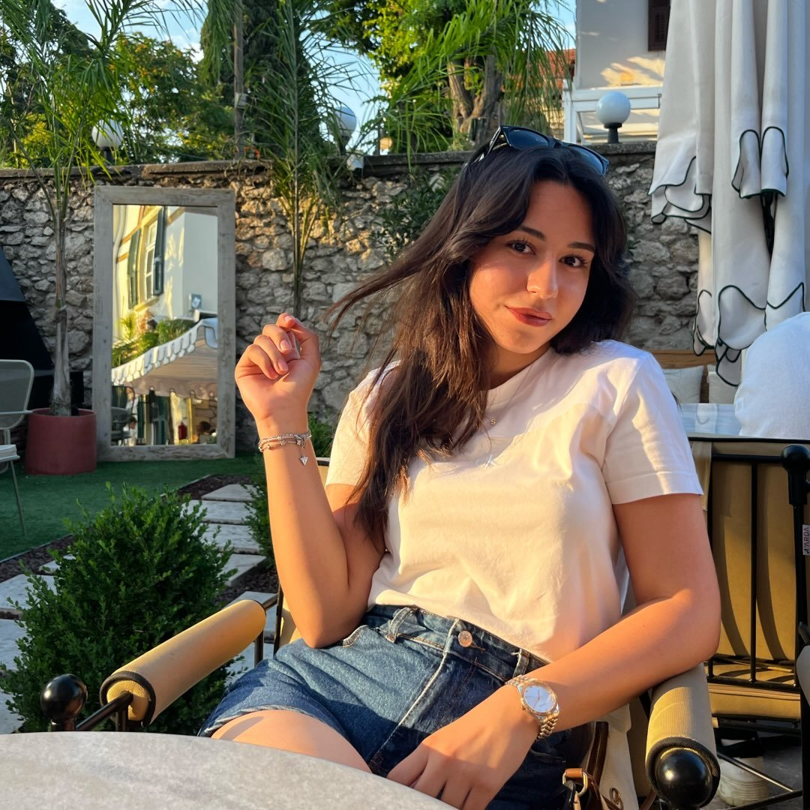

24 Kasım Öğretmenler Günü • MatematikYoung • Grad School • Project Mode

Selin ŞahinMatematik Öğretmeni & Proje Mentoru
Sayıların ötesinde, fikirlerin büyüdüğü dersler
Hem yüksek lisans koşturmacasında hem de sınıf içinde ürettiğimiz projelerde; matematiği kuru formüllerden çıkarıp canlı bir oyuna dönüştüren hocamıza özel 24 Kasım sayfası.
Selin Hoca’nın Ders & Proje Günlüğü
Genç enerji, yüksek lisans vizyonu ve birlikte üretim
24 Kasım
🎓Yüksek Lisans Temposu
Akademik dünyanın taze enerjisini doğrudan derse taşıyan dinamik ve güncel bir bakış.
🚀Ortak Projeler
Sadece tahtada kalmayan; birlikte kafa yorduğumuz, kurguladığımız ve geliştirdiğimiz fikirler.
⚡Sıkılmadan Matematik
Esprili, akıcı ve zevkli derslerle “matematik zor mu?” sorusunu unutturan bir atmosfer.
🧠Sürekli Merak
Her problemde yeni bir yol arayan, öğrencisinin fikrini ciddiye alan o genç mentör ruhu.
Hocaya Özel: İçinden Çıkılamayan Formül
Yüksek lisans seviyesinde minik bir 24 Kasım meydan okuması
Hocam, yüksek lisans tez/ders notlarının arasında buna bir göz at bakalım; yakınsıyor mu, yoksa bizi sabaha kadar tahtada mı tutuyor?
İpucu: Paydadaki k! faktöriyel büyümesi, paydaki k² + k + 1 polinomunu ve |sin(...)| ≤ 1 sınırını nasıl ezer?
Hoca İçin Not: Her terimin mutlak değeri (k² + k + 1) / k! ile sınırlandırılır. k ≥ 4 için k² + k + 1 < 2^k ve k! super-üstel büyüdüğünden seri mutlak yakınsaktır (ve kapalı formda e tabanlı terimlere ayrılabilir). 24 Kasım bonusu: “Hocam kahveler benden, kalanı sizde!”
Birlikte Ürettiğimiz İşler
Kartlara dokunarak detayları incele
Collab
Fikirden Tasarıma Hızlı PrototipYüksek Enerji
Happy Teachers’ Day
İyi ki varsın Selin Hocam!
Genç enerjin, yüksek lisans azmin, zevkli derslerin ve birlikte ürettiğimiz projelerdeki o harika uyum için 24 Kasım Öğretmenler Günün kutlu olsun!